Three panes, all keyboard
Sources with unread counts on the left, articles in the middle, the story on the right. j and k move, o opens, s stars. Folders, plus views for unread, starred and today.
A fast, keyboard-driven news reader for Omarchy. Feeds, keyword alerts and MCP sources in one window that takes its colors and font from your theme. Local, private, no account.
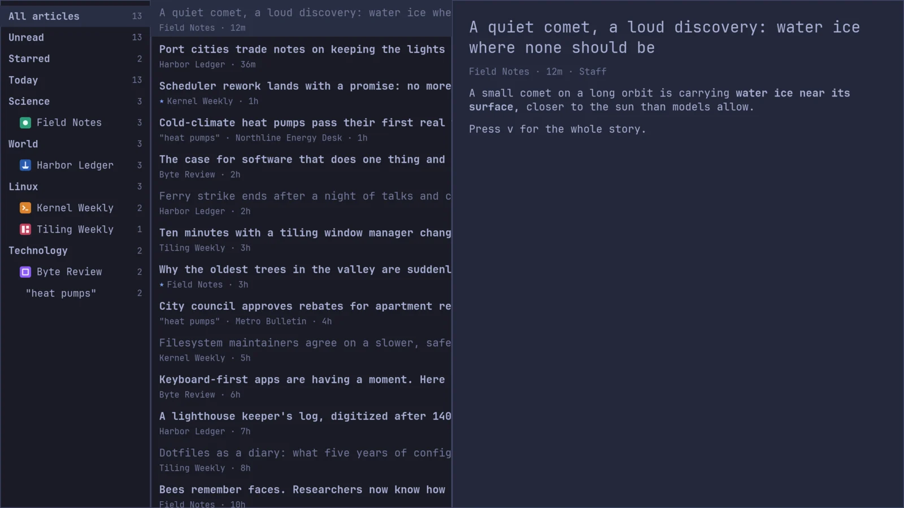
curl -fsSL https://gutenbergapp.com/install.sh | sh
Linux on x86_64 or aarch64. The script downloads the latest release from GitHub, checks it against the release's SHA256SUMS, and puts one binary in ~/.local/bin. Nothing else is touched. Read the script before you run it.
Sources with unread counts on the left, articles in the middle, the story on the right. j and k move, o opens, s stars. Folders, plus views for unread, starred and today.
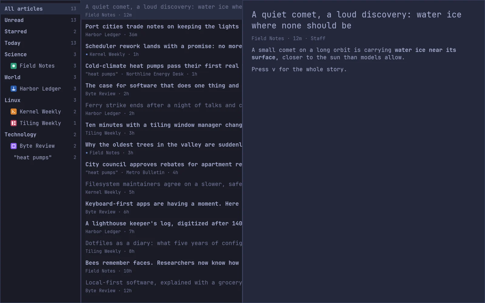
Feeds often send a paragraph. Press v and Gutenberg loads the page and keeps only the article: headings, pictures, quotes and code, in your theme's font.
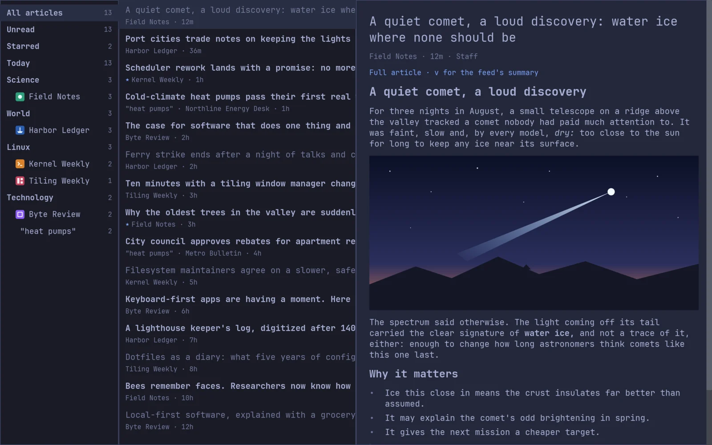
Press / and matches arrive as you type, across titles, authors and summaries, newest first.
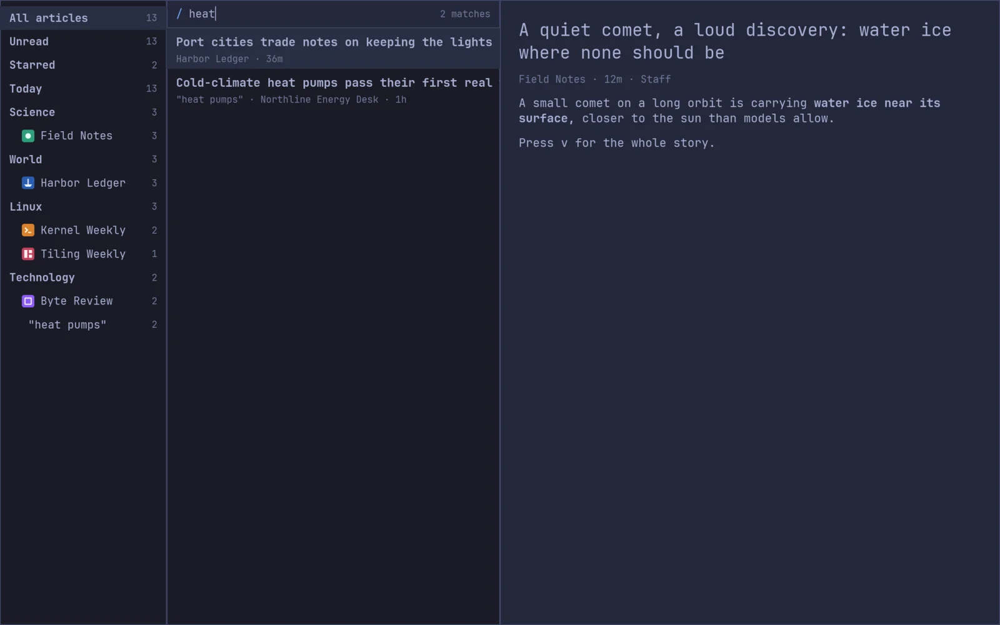
: opens the command palette: type a few letters of what you want and press Enter. ? lists every key.
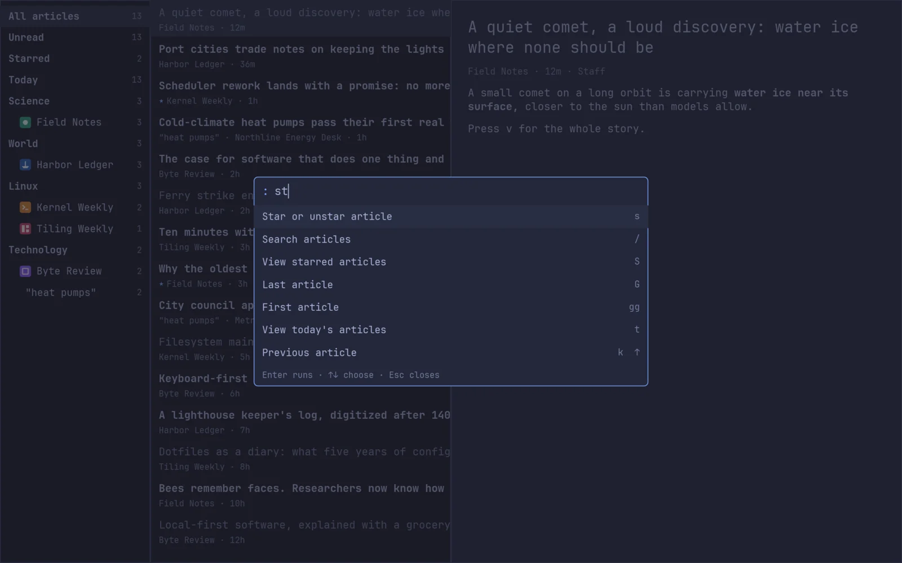
A fresh install opens on Add sources: hand-picked, checked-working feeds in 21 categories, with twelve free starters already ticked. Or bring your subscriptions with gutenberg --import.
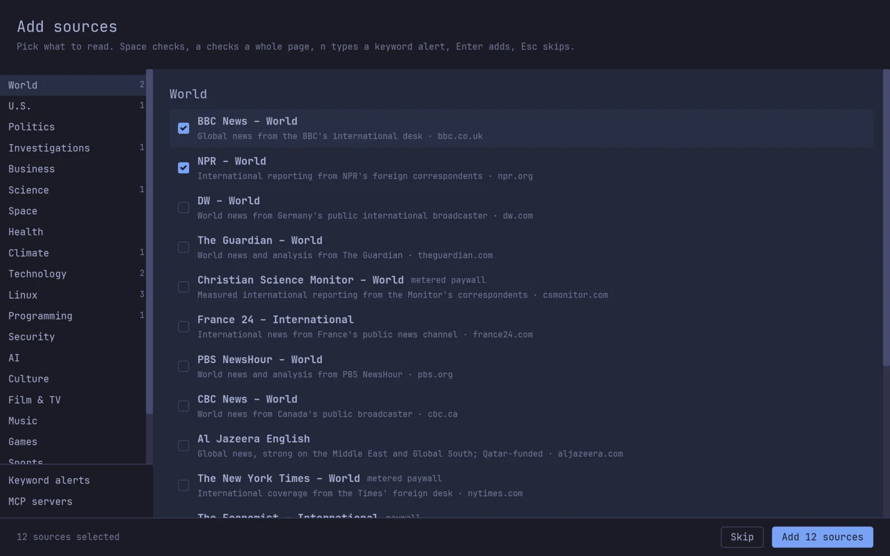
Turn a news search into a source. Press n, type a query like "night trains", and Gutenberg asks Google News and Bing News for it on every refresh, showing each story once. Quotes, -word, site: and OR work, and lang:fr or region:CA searches another country's news.
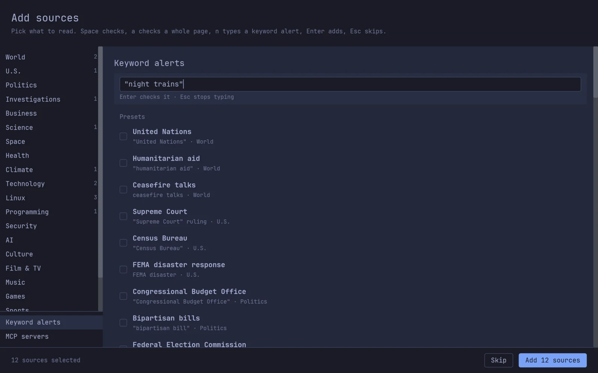
Colors and font come from your Omarchy theme, light ones included, and an open window follows omarchy theme set within a fraction of a second. Where a theme's dim text would be hard to read, Gutenberg nudges it just enough to read.

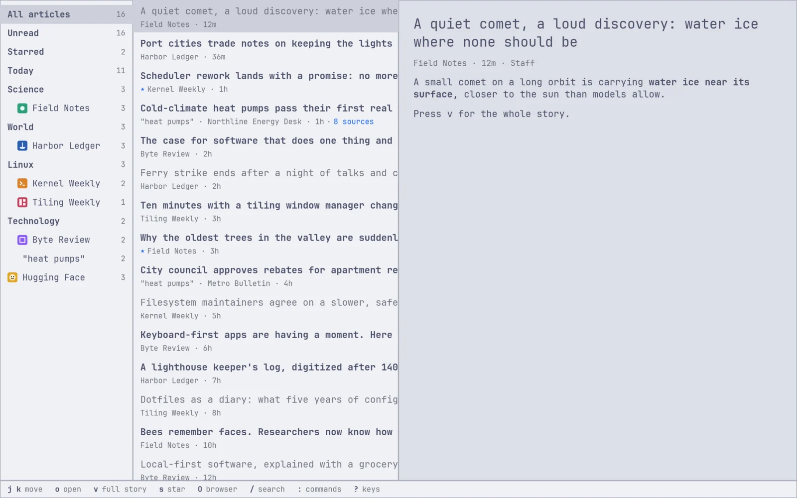
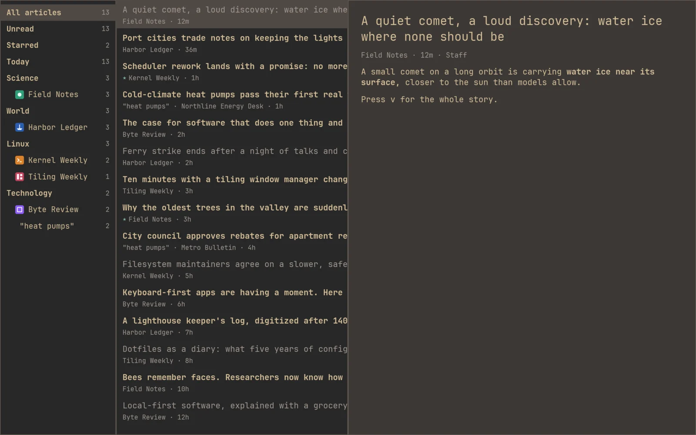
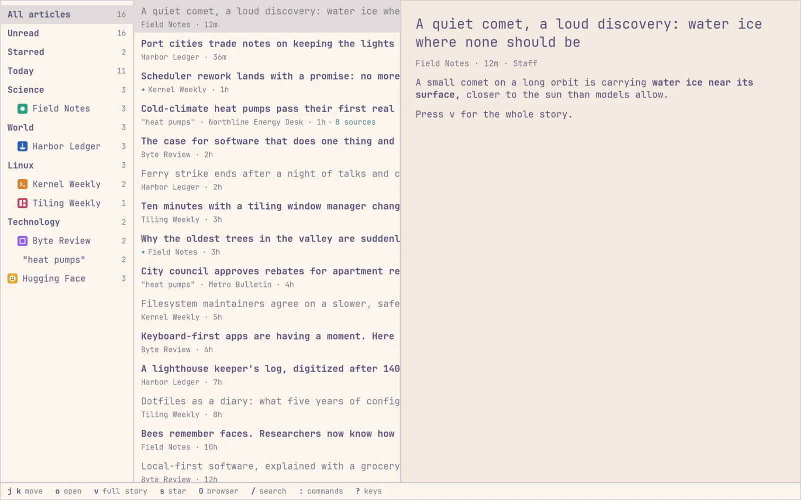
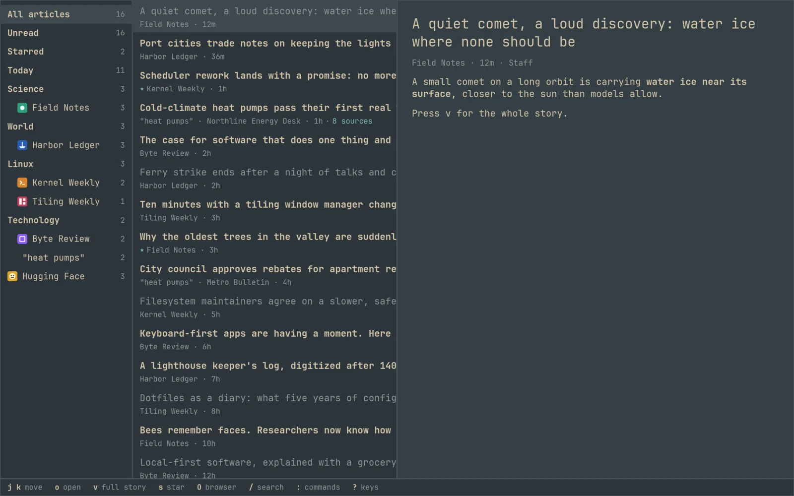
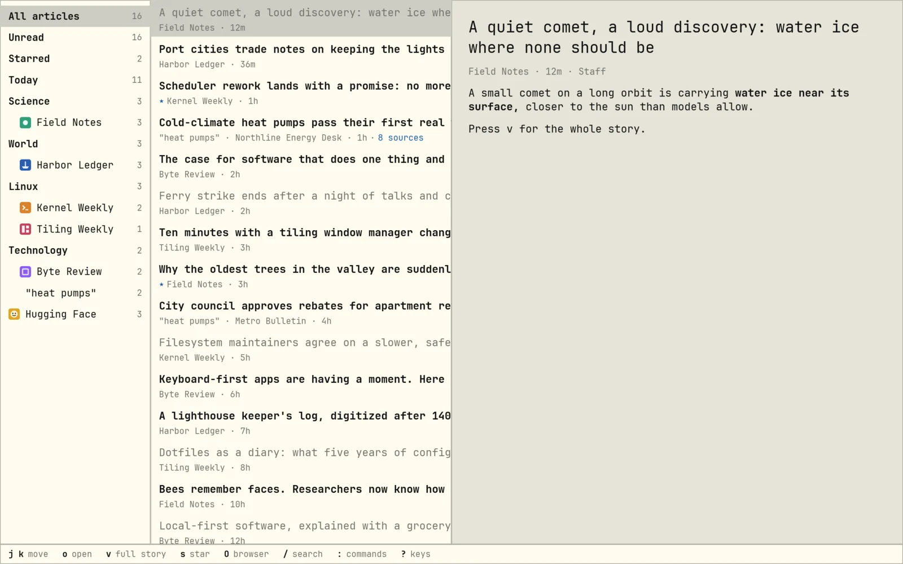
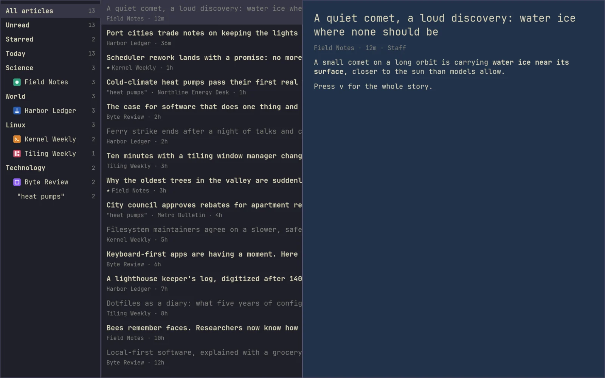
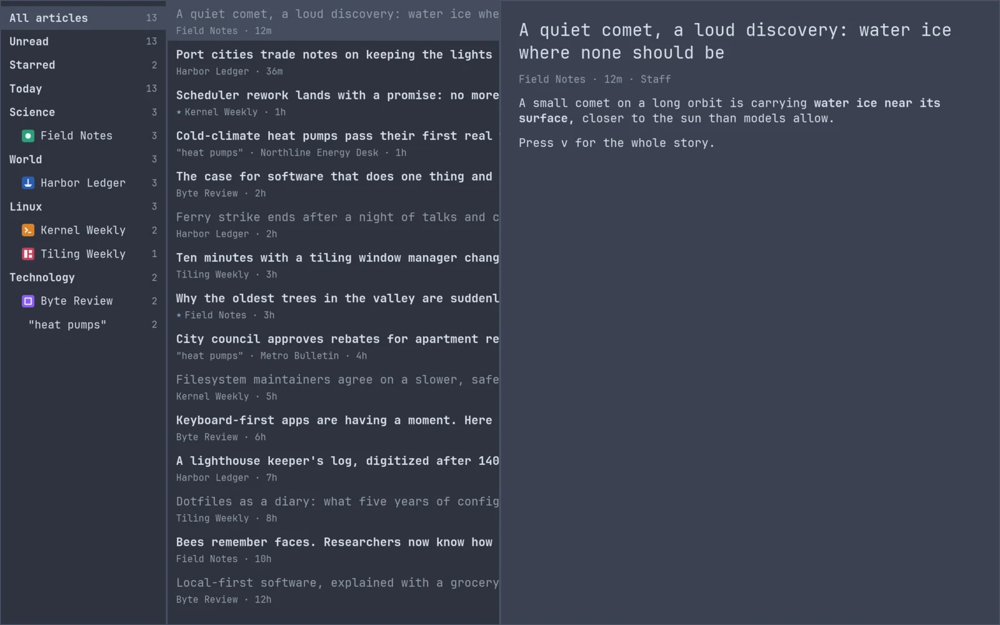
Fifty seconds, sound on: picking sources, a keyword alert, reading, the whole story, search, the palette, and themes. Music: “Beautiful” by avdrav.
gutenberg # open the reader gutenberg --add <feed-url> # add an RSS, Atom or JSON feed
Bind it in ~/.config/hypr/bindings.conf:
bindd = SUPER, N, News, exec, gutenberg
Layout and text size live in ~/.config/gutenberg/config.toml and apply as you save. Colors and font come from your Omarchy theme and the monospace font omarchy font set picks, and an open window follows them when they change.
[layout] sources = 2 list = 4 article = 6 [font] size = 14 # 8 to 32 [keys] hints = true # the key bar along the bottom
Rules star, read or mute new articles by a word or phrase in the headline or summary, in every source or one source or folder (in). A muted article is never stored.
[[rules]] match = "sponsored" action = "mute" # or "star", "read" [[rules]] match = "Rust" in = "LWN.net" # a source's title or a folder's name action = "star"
gutenberg --update
Installs the newest release over the one you run, checked against its SHA256SUMS as above. An open window says when one is out: it asks GitHub once a day (check = false under [updates] in config.toml turns that off).
Every release tarball has a build attestation from this repository's release workflow. With the GitHub CLI:
gh attestation verify gutenberg-x86_64-unknown-linux-gnu.tar.gz -R avdrav1/gutenberg
curl -fsSL https://gutenbergapp.com/install.sh | GUTENBERG_VERSION=0.2.0 sh curl -fsSL https://gutenbergapp.com/install.sh | GUTENBERG_INSTALL_DIR=/opt/bin sh
rm ~/.local/bin/gutenberg
rm -f ~/.config/omarchy/hooks/{theme,font}-set.d/gutenberg # Omarchy hooks
rm -r ~/.config/gutenberg ~/.local/share/gutenberg # settings and saved articles